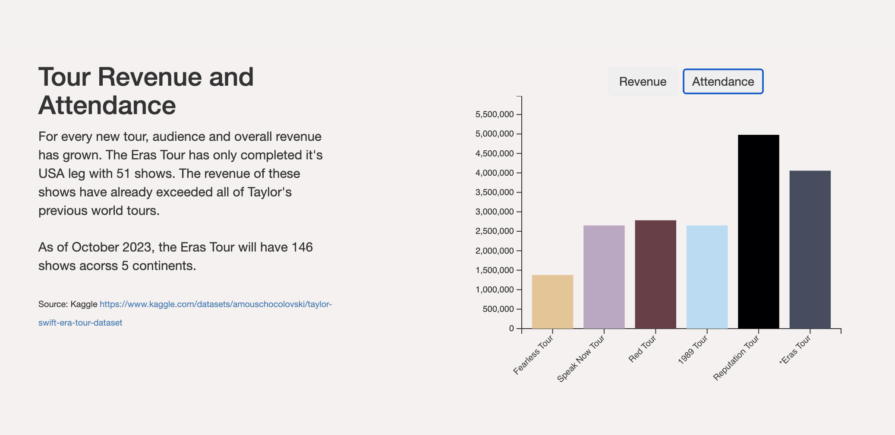
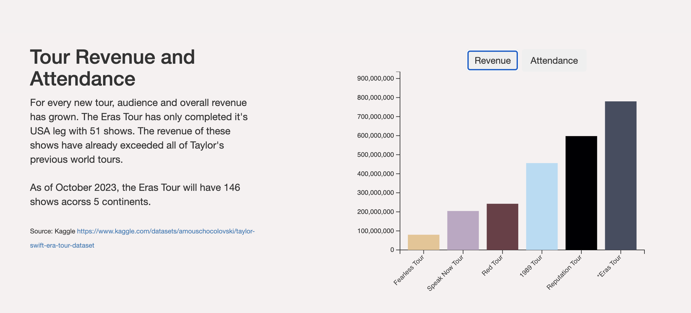
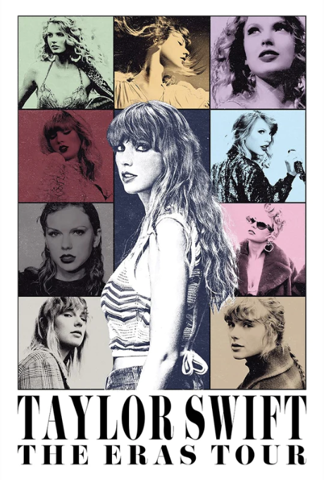
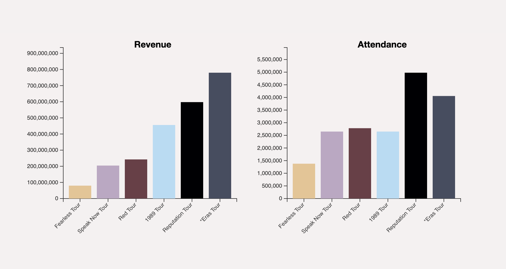
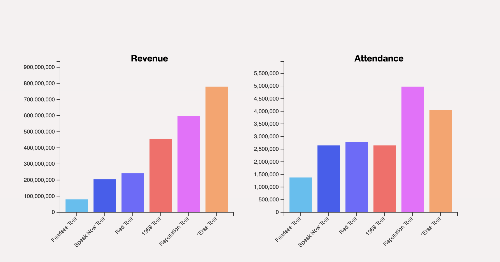
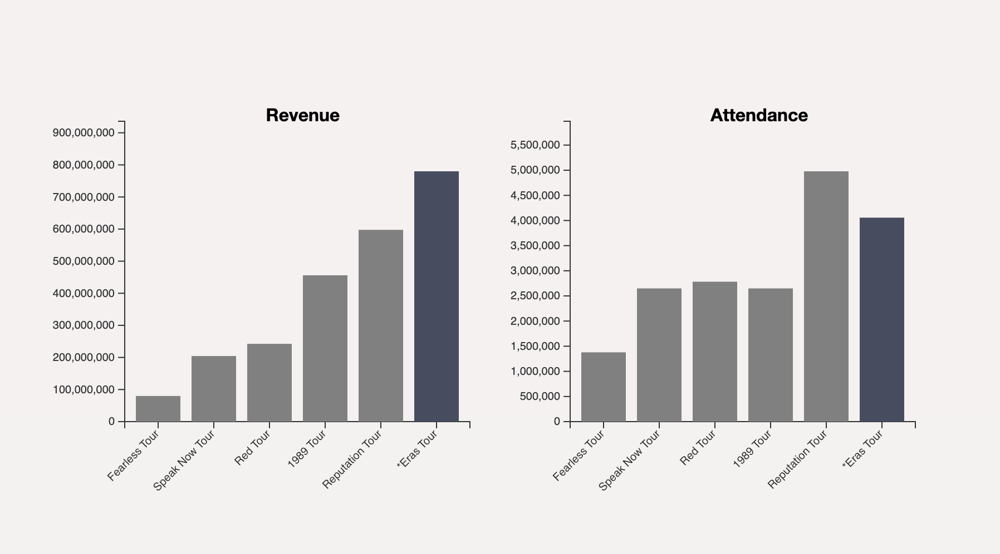

By Sadie Amato, Bailey DeSouza, Ajay Gandecha, Meghan Sun
Motivating Problem
Taylor Swift, one of the most popular artists globally today, has had six international tours during her music career. We are examining the popularity, in terms of attendance and revenue, of each of these tours to discover how her popularity has changed over time and how this has impacted her concerts.
Why it Matters
In Miss Americana (2020), a documentary about Swift’s life as an artist, she says, “we do exist in this society where women in entertainment are discarded in an elephant graveyard by the time they're 35… As I'm reaching 30, I'm like, I want to work really hard while society is still tolerating me being successful.” She was feeling fearful about her age invalidating her art at a certain point, even while she was merely 30 years old.
As she points out, there is a stereotype within the broader entertainment industry about what a woman is able to accomplish past a certain age, how a woman is able to be past a certain age. This is why our motivating problem matters; we would like to confront this stereotype with a case study of Swift’s popularity in her tours as a nearly 34 year-old.
Furthermore, examining data about tour attendance and revenue in general is important for so many stakeholders. Venues, marketing teams, and artists all need data like this to plan their budget for the demand and revenue expected from a tour. Additionally, this data could be useful for fans who are planning to see an artist’s concert; if they know how high the demand will be, for example, they may know to try to secure tickets more quickly.
Data
The dataset to visualize tour revenue and attendance was sourced from Kaggle [1] and cleaned by our team. The set contains information about the venue, city, and country where each concert took place, the tour each show was associated with, the opening acts that performed, the attendance in number of tickets sold, and the concert’s revenue generated by ticket sales. For our visualization, we will group all the shows from each tour together and examine their total attendance and revenue.
Tasks
For our motivating problem, we will design a visualization that aims to accomplish the following tasks: Is there a correlation between tour attendance and revenue, and if so, how strong is the correlation? Which one of Taylor Swift’s tours has had the highest revenue, and which has had the highest attendance? Do her tours now have higher revenue than the previous tours? Using tour attendance and revenue as a proxy for popularity, on which tour was Taylor Swift the most popular?
Our Preliminary Viz & Design Choices
The preliminary visualization can be seen in the following visualization tool, in the “Tour Revenue and Attendance” section: https://meghansun322.github.io/taylor-swift-data-story/ In the preliminary visualization, revenue and attendance were grouped by tour and displayed on separate bar graphs, where each bar represents a tour. There is a button that allows users to interactively switch between the bar graphs. Additionally, each bar is colored based on the tour’s primary color. After the initial design, the color choice of the bars in the bar graphs is a design choice that we would like to investigate further. Our decision to employ a color scheme reflecting each tour’s primary color is influenced by our belief that it would more effectively capture user attention and distinguish each tour’s achievements. Ultimately, we would like to investigate whether there exists a color scheme that can more aptly convey Taylor Swift’s tour achievements.
Experiment Design
Target Question:
How can we best create a visualization to resonate with a large audience? We are looking to
determine how viewers are interpreting our current preliminary visualization and have the following
design question: how do viewers analyze and interpret color in a graph? What kind of color scheme
would work best for this visualization tool?
Below is a screenshot of our original, preliminary visualization for our target problem:


The colors of each tour bar are based on the color Taylor Swift chose for the corresponding “era” in
her Eras Tour. Below is a screenshot of an Eras Tour post, referencing each concert/era and its
color.

As data visualization designers, we’re curious to see if non-Taylor Swift fans note any meaning to
the colors in this visualization, and how viewers are interpreting the colors as a whole.
Experiment Description:
To analyze viewers’ interpretation of color, we’ve prepared three different color schemes for the graphs. One is the original color scheme, with the colors based on each “era”, a second one contains randomized, bright colors, and a third focuses on highlighting the most recent concert.
Original: Visualization Square
Brightly Colored: Visualization Circle
Highlight Most Recent: Visualization Triangle
We will split participants into three groups. Each group is assigned one color scheme graph to look at and each group is labeled based on a shape. The circle group will be viewing the brightly colored, randomized color scheme. The square group will be viewing the original, eras color scheme. Lastly, the triangle group will be viewing the color scheme that highlights the most recent tour (the Era’s tour). Each participant will be shown their assigned color-scheme graph for 10 seconds. After viewing their assigned color-scheme graph, participants will answer a questionnaire (detailed below in the experimental tasks section). This questionnaire is focusing on what information they were able to remember after viewing the graph and what information stuck out after viewing the graph for a short period of time. They will have about 2.5 minutes to complete this short form.
After completing this first part of the experiment, all groups will then view a link that shows all three graphs and color scheme options. They will then answer another questionnaire. As opposed to the first part of the experiment, here participants will have access to the visualizations while they fill out the form, and this part is not strictly timed. This questionnaire will be focusing on viewer’s opinions on the color schemes and will also ask some demographic questions (such as if they’re a fan of Taylor Swift or not).
Independent, dependent, and control variables
The independent variable of this experiment will be the choice of color palette used in the bar graph. As shown above, we will use a set of three modified color palettes - the original color palette matching the tour colors, a higher contrast color palette, and a color palette that just highlights the most recent tour.
The dependent variable of this experiment will be the user’s comprehension of the visualization and the data presented within it. This metric will be measured based on the results of a questionnaire given to consumers of the visualization. The design of the questionnaire is shown in the next section.
In this experiment, the chart type, axis labels, data presented, and sorting of data within the visualization will remain controlled. This ensures that no confounding variables are present that might unexpectedly skew our results, and ensures that the independent variable selected is the only factor of the visualization changing in the experiment.
Our Hypothesis
We predict that the original color palette will be the most effective at conveying the data and change in revenue for each Taylor Swift tour. We believe that the color differences between each mark will make each tour more discernible - something that the color palette that just highlights the most recent tour may struggle with. In addition, the colors of the original palette are more easy on the eyes than the brightly colored dataset, allowing users to more easily scan the dataset and compare each tour.
Experimental Tasks
For a detailed description of the experiment, see the Experiment Description section above.
Each participant will view their assigned color-scheme graph and then answer the following questionnaire: Part 1 Form: https://forms.gle/wXURZ92ydoVzH9fA9
Each participant will view all three color-scheme graphs and then answer the following questionnaire: Part 2 Form: https://forms.gle/jBQrAtTuNRP8vL67A
Analysis Plan
From this experiment, we will collect our Google Form data in a spreadsheet with each participant’s response. This data will include responses to multiple choice, short answer, and ranked order questions about our visualization and some details of the participant’s demographics. To analyze our data, we will divide the responses into three categories that correspond to the three different color schemes the groups were assigned to view. In each category, we will calculate the following metrics based on our data: the percentage of participants who got the highest tour details correct, the percentage of participants who got the lowest tour details correct, and the overall percentage of correct items selected across the entire group. Then, we will compare these metrics across all three color groups to determine if there are any statistically significant performance differences, and therefore begin answering our target question. If we have time for extending our analysis, we are also interested in examining how being a self-identified Taylor Swift fan–or not–impacted the results.
Limitations
With the limited scope of our experimental design process and run, there are several limitations and confounding variables that may impact our results. First of all, this experiment was conducted on a very limited number of participants, and they were all of the same age range. We also conducted this experiment early in the morning, which may have impacted people’s memory and performance. If any participants were color-blind or have any other visual impairments, this may also influence our results. Additionally, whether or not our participants had prior knowledge or bias about Taylor Swift and/or her tours would definitely impact our results. If any other factors of the visualization designs besides the colors influenced people’s understanding of the data, this would also be a confounding variable. However, we tried to control for this issue by keeping every aspect of the visualizations (besides the color) the same across all participants.
Discussion
TODO!